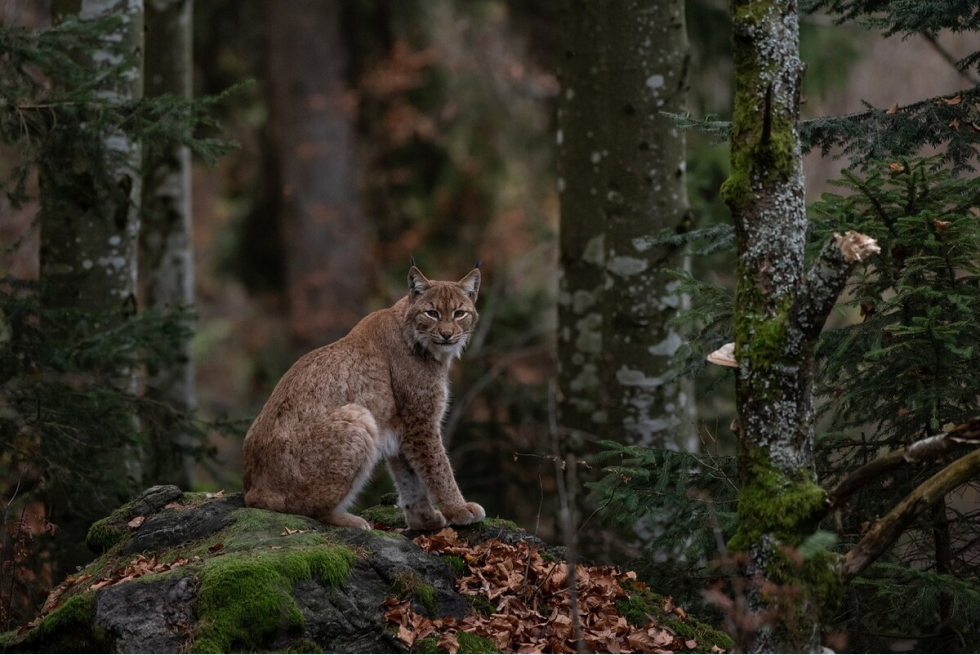
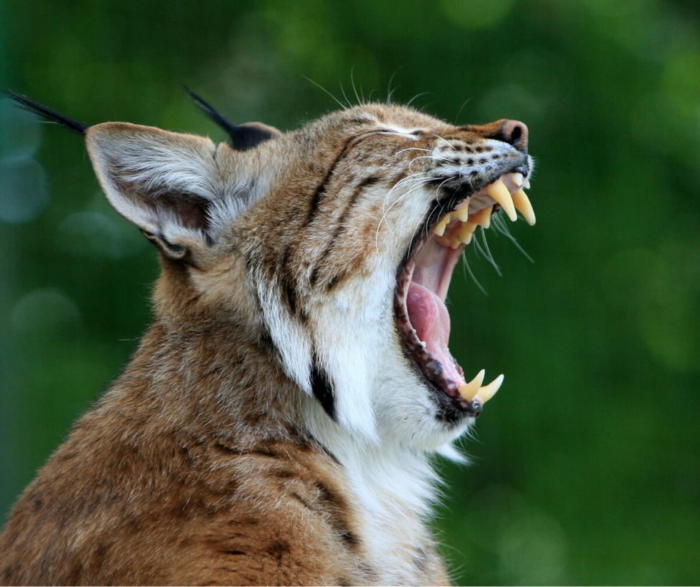
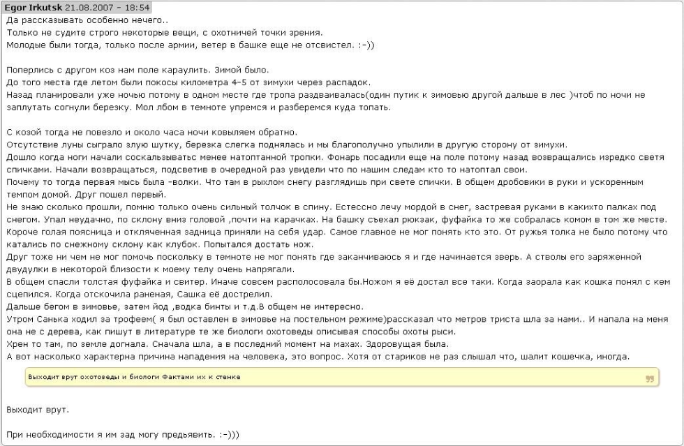

Нападение рыси на человека. Мифы и реальность
Среди людей ходит достаточно много баек и легенд о страшных лесных хищниках, особенно много слухов идет от костровых баек охотников. Так существует два устойчивых мнения, первое, что рысь - это опаснейший зверь который не может пройти мимо присевшего человека и нападает с всегда с дерева. Ну и второе мнение, что нет ни одного реального случая нападения здорового зверя на человека. Мы говорим именно о здоровом звере. Как правило такие животные крайне осторожны и всеми силами избегают встречи с человеком. Нападения же животных, больных бешенством, периодически происходят на просторах СНГ, так в 2019 году, подобные случаи были зафиксированы в Башкирии и Иволгинском районе Республики Бурятия.
Тема эта появилась в ходе обсуждения одной из статей в Яндекс Дзене. Дело в том, что я собственно лично знаком с одной из жертв нападения кошки, на момент нападения я был еще в достаточно нежном возрасте и естественно всех обстоятельств уже и не помню, но готов удостоверить факт что оно таки было. Оппонент же утверждает что рысь животинка миролюбивая и на крупного зверя, коим является и человек нападать не будет. Мнение оппонента достаточно обоснованное и близкое к реальности, вес кошек этой породы, в среднем, это 15-20 кг. Редко когда встречаются откормленные "мутанты" в 30-40 кг, но, повторюсь, это редкость, я во всяком случае таких зверей не видел. Исходя из своей массы и способностей, прыгать на животину больше и тяжелее себя для рыси невместно... животное умное, понимает что огрести при таком неравенстве гораздо проще, чем плотно закусить.
Но, что делать, мнение свое нужно чем то обосновать, при этом словам обычно веры нет, нужны более веские доказательства. Полез в литературу и интернет. Упоминания есть, в том числе и от людей которым можно доверять, в том числе и от своего земляка, который, к слову также не мог объяснить нападение. Ниже вставляю картинку с описанием взятую в архивах форума guns.ru
Вот исходя из этого и понимаешь, что кошачьи - это достаточно непредсказуемые существа, и что им стрельнет под кисточки, несколько непонятно. Соответственно есть еще различные публикации в СМИ, газетах и интернете, но вот у меня веры больше предъявленному рассказу. Особенно учитывая тот момент, что моя односельчанка никуда не делась и ее "форс-мажор" остался ей на память, в виде склоненной набок головы, в ходе нападения было повреждено сухожилие на шее. Вообще в ходе изучения литературы у меня сложилось стойкое впечатление, что изучением рыси вплотную не занимался ни один из отечественных естествоиспытателей. Совместно или попутно, каждый второй, а вот плотно, вдумчиво и серьезно... вот и расходятся легенды о миролюбивом хищнике или о прыжках его с деревьев. Так что #развеиваем мифы , рысь не только нападает на людей, пусть и редко, но и атакует и ходит, в основном, по земле, не обезьян, в общем, это и не домашняя кошечка, которую можно погладить. Да и приучаются рыси, по отзывам достаточно плохо, так что домашнего котенка из нее не выйдет.
Уважаемые читатели. С удовольствием выслушаю ваше мнение по этому вопросу! Буду рад каждому аргументированному комментарию или рассказу из личного опыта.
На сим все, спасибо за прочтение!